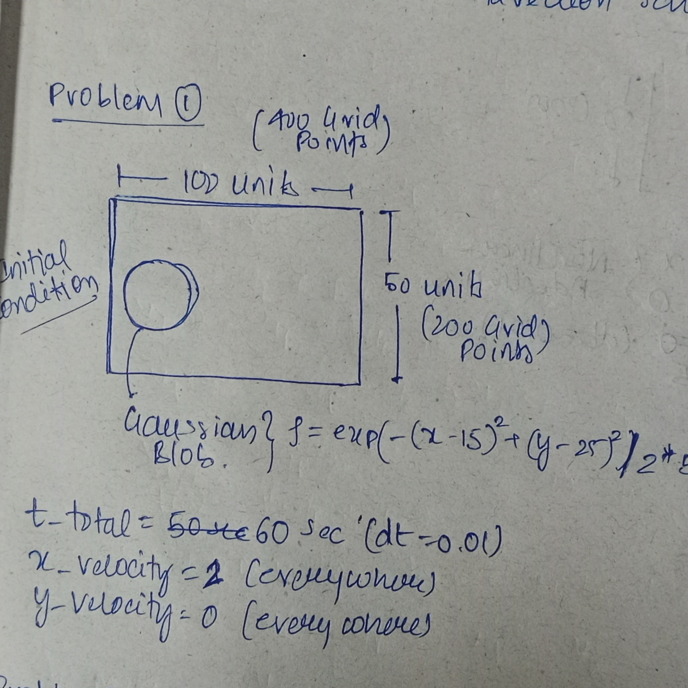
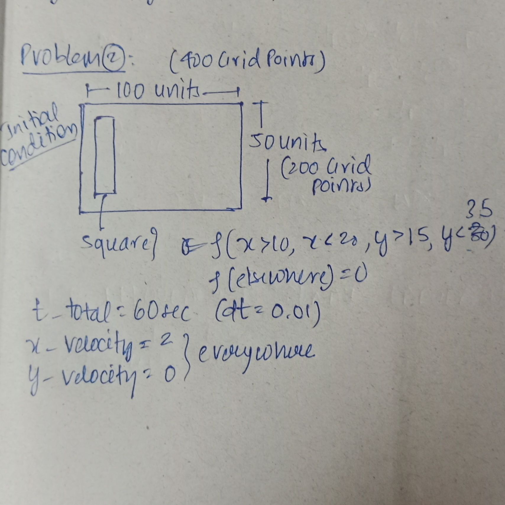
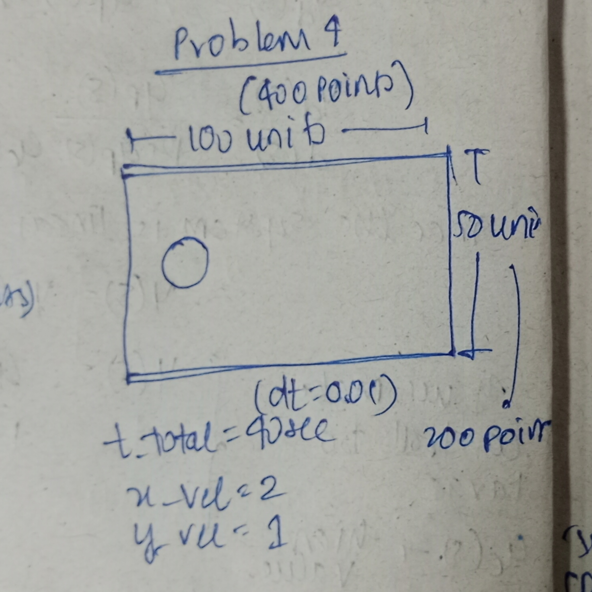
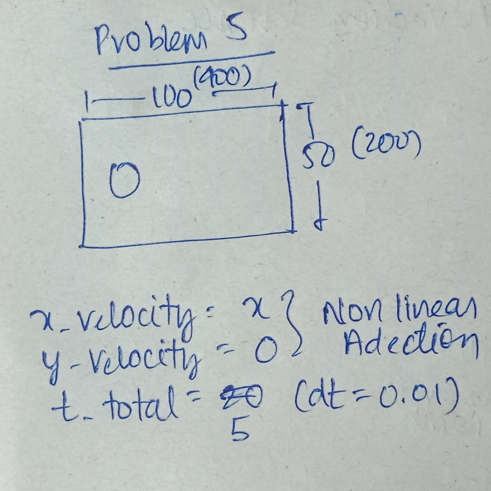

Crowd Dynamics
Why?
So in my third semester one of my Fluid Mechanics professor Prof. Naveen Tiwari taught us ESO204, which is an introductory course on fluid mechanics. And after studying that course, I also watched the lectures of Prof. Sanjay Mittal, who supervised me in this project in crowd dynamics. I watched his lectures on YouTube, and I loved those lectures. In the course, however, Professor Naveen Tiwari also mentioned that "Fluid could also be used to model crowds," and that sentence kind of stuck with me. Because when studying fluid, if someone tells you what you are studying is also how crowds behave, you may be left thinking about this idea. It was very intriguing for me to think about people as particles of fluid. And I kind of thought it is not at all a bad way to compare. I mean, when in a dense crowd, I could imagine that I really don't have any control over myself (just like fluid). By which I mean, one loses his individuality and just goes where the crowd takes it. Just like the fluid flowing.
About a year later, I happened to go to a Jyotirlinga temple in Omkareshwar, in Madhya Pradesh, where I truly experienced the crowd in its true sense. I mean, as far as I could remember, this might be the most brutal crowd I had ever experienced. That was the first trigger point which led me to crowd dynamics. Later in the summer of 2025, I thought of working in this field, and got to know that there are different softwares made to simulate the flow of crowd in microscopic point of view, (meaning to model each pedestrian individually). But I found the papers back then to be a bit difficult. So I thought maybe this is not the time for me to work on this.
Then during the add-drop period (which is the period where students could add or drop a course during the registration in a semester), I found that we had a UGP (Undergraduate Project) in our template in the 7th semester. And this gave me another hope to start my work in crowd dynamics. And then I met Prof. Sanjay Mittal and discussed with him these ideas. I knew that he had worked in the feild of traffic flows, which is similar to crowd dynamics, but for vehicles and traffic.
Meeting 1
The first meeting was about formulating the problem. Back then I found that formulating the problem itself is the most difficult part of the project>. I came up with some very bizarre ideas like simulating the crowd on the path of temples and seeing how the people moved in the twisty paths of temples, etc. After the discussion, I was very clear that "Just because I want to do something doesn't mean that I should straight away start doing it". Now if I think about all that, I ask myself what I really wanted to do? I mean, I could simulate the crowd, but then what? So I found that I lacked a clear objective. Professor told me that maybe I am romanticizing my future with this project, which may disconnect me from reality, which i now feel was very true.
So he gave me the following paper and told me to come up with some clear objective.
Here are the papers : Traffic Flows, Hughe's Flow
These were the paper suggested.
Meeting 2
In this section I finally made the big move, and here is my First Report that I made. This was made after we had a discussion on the traffic flows, and how we could relate the traffic flow with crowd dynamics. Now this still needed somewhat discussion. Reading through the report, I feel I was still a naive thinker. My objectives were still not satisfactory. But one thing that I need to specify is that I still feel that the second objective has some potential. I mean, this idea (which was also suggested by Professor) came from the understanding that the flow moving through a CD nozzle will choke at some point. And therefore sir said that "If there is one pedestrian moving into the entrance there is no problem, and everyone entering will have absolutely no problem in moving through the paths. But if there are all the people jammed inside the path, we see no motion of people. So there must be a value of inflow rate of people where something like choking must be happening." Even till now when Meeting 7 has been done, I still think that this is a good subject.
Here is one more paper that porfessor recommnended, Here
This was said to me as a paper that has implements the hughe;s flow numerically.
Meeting 3
So in the next week I made the This report. And this was the first turning point in my project. I implemented my first code for the hughe's flow. Although it wasn't that good but was considerable amount of progress.
Here are the results:
The results to me looked very senseless, but nevertheless at least I had something. Since my results made no sense, I now had to do the following. I had to validate the methods that I have used in this project, and this includes the Fast Sweep Method and the method used for advection. So for the advection, I have used the simple upwinding, and to validate the fast sweep I decided to replicate and spend some time understanding the eikonal equation. I have used this paper for that. So now the objective for my next lab was to work on the FAST SWEEP METHOD. Also, in the fast sweep, they have tried using the distance function, so for that, I read about this paper about the distance equation. Here
Meeting 4
Here is the Report_1 (Hughe's Flow) and Report_2 (Eikonal Equation) for this meeting that I made. And here my task was to use some synthetic function and use it to test how good the algorithm is to solve the Eikonal equation. And so I did the same as mentioned in the paper. But one problem was that I checked the validity of this algorithm on a problem that contained Dirichlet condition on the boundary, which was not the case with my project. So this gave me the objective for my next lab that is to apply the well posed Neumann boundary condition on the problem and then use the algorithm in the main Hughe's flow solver. He tried to explain that using an algorithm that we don't fully understand should not be used until it is fully validated. So now my next task was to again validate the fast sweep method but this time for Neumann condition.
In addition to that I was also asked to make a toy problem and see if the advection equation is really working. So what he tried explaining me was that "If I am unable to solve the problem all at once, try breaking it into fragments (which is advection and fast sweep) and see if they work fine individually."
Shown below are some results:
Meeting 5
Here is the Report 1 (Hughe's Flow) and Report 2 (Fast Sweep Method) of this meeting. Here I realised that the paper doesn't really discuss about implementing the FAST SWEEP METHOD on the problems containing Neumann boundary condition. And thus this needs to be fixed. As mentioned in the paper, I used the Ghost point approach and somehow tried coming up with the solution, and then used that understanding of fast sweep into Hughe's flow solver.
So now I was implementing Lax Wendroff scheme for advection because what I saw was that first order upwinding scheme had lots of numeric diffusion, and the Lax Wendroff was better in all the sense except that it had many numerical oscillations that were explained to be Gibbs oscillation occurring due to sharp discontinuity at the tip of discontinuity (Fourier transformation). And the results were also not very appreciable. They still looked like something really wrong is going on with them. And then the suggestion was "Why not start with a simple one dimensional problem and then see if it's working. It will be easier to study one dimensional flow compared to two dimensional." And so the next task was to simulate the Hughe's flow in one dimension.
Meeting 6
Here is the Here of my progress.
Now at the first instant I thought I still messed up the problem. I used the ghost point approach to implement Neumann condition on \(\phi\) while solving Eikonal equation using Fast Sweep Method. And while doing so I also implemented Lax Wendroff scheme for advection in the density. The results were not very good, and I still was not at all satisfied.
Here are the results for your understanding
/Initial_Density_Distribution.png)
All of these didn't go well, and there were some problem that professor said me about :
- The initial condition taken was not at all good. Since I have been for all this time taking the initial condition containing sharp discontinuities in the density. And since my problem contained shocks due to non linear advection equation with velocity proportional to negative of density, sir said it would be better to pick the boundary condition which was too close to the minimum or maximum value of density.
- Also I was trimming the density if it ever exceeded the maximum value, this seemed to cause problem since in that case I would be solving a very different problem all together.
After making the changes in the initial condition all of a sudden the result started to make sense. A boundary condition of \(\rho = 0\) at the boundary for no inflow and the formation of shock due to crowd behind the peak having higher velocity, all of it was working just fine. Given below are the results
This made it clear that the problem was in the type of intial condition I was implementing really, and not in anything else. So now it was about extending to two dimension, from where I came.
Meeting 7
Now it was about making the two dimensional flows. And here is the Report
Here I went in all the direction and tried many different problems. given below are all the problems :
| Problem | Initial Condition | Density | Potential | Velocity |
|---|---|---|---|---|
| Standard Exmaple |
/Standard_Example/IMG_20251017_001838.jpg)
|
|||
| Two Blob |
|
|||
| Unsymmetrical Exit |
|
|||
| Multi-Exit Problem - 1 |
/Multi_Exit_Problem_1/IMG_20251017_002514.jpg)
|
|||
| Multi-Exit problem |
/Multi_Exit_Problem_2/IMG_20251017_003527.jpg)
|
After the meeting there were two things that came into notice. That the boundary condition on density was not being respected, and also professor said me to compare the solution with some paper that actually solves a problem of Hughe's flow, because this might be helpful to validate the methods I am using to solve the problem. And so my next task was to replicate the result of This paper.
Meeting 8
Now this paper was using something called WENO algortihm. THird order to solve the eikonal equation using WENO fast sweep, and fifith order for density using WENO advection. Andthese were some really complicated method. Also the problem mentioned here had an obstacle, which was not easy to model. How excalty I modelled the obstacle is mentioned in the Report. And here is again the link to the paper.
Using the method for modelling the obstacle I tried some of my own problems out of curiosity an dthye are shown below.
| Problem | Density | Potential |
|---|---|---|
| Obstacle 1 | ||
| Obstacle 2 | ||
| Intelligent Crowd |
And looking at the results I am not at all disappointed. At least all the result made sense. Just the boundary condition has to be taken care of later.
So with that understanding I tried implementing the exact same problem which was done in the paper, and the result of which are shown below. When comparing them with that of the paper, they were not at all similar. The results in paper was very different. And following were the problem that we thought.
And looking at the results I am not at all disappointed. At least all the results made sense. Just the boundary condition has to be taken care of later.
So with that understanding I tried implementing the exact same problem which was done in the paper, and the results of which are shown below. When comparing them with that of the paper, they were not at all similar. The results in the paper were very different. And the following were the problems that we thought of.
- The paper used 5th order method which had much higher accuracy and resolution compared to my first order method. This was also suggested by the professor.
- Secondly I knew that I am not respecting the boundary condition when solving the problem, especially at the obstacle, and this was also a source of problem.
- And lastly, the problem took into account the Discomfort Factor \(g(\rho(x,y,t),x,y,t)\), but I kept it to be one. This was mentioned in the Hughes' paper that it could be taken as unity.
Here are the results:
Now the task was to really use the exact same scheme used in the paper and use it replicate the result of the paper.
Meeting 9
This I consider to be the final meeting with the professor, and I believe I will have to really perform well this time. So here is the research paper that I will be using.
The task in today's attempt is to use the same method as used in the research paper, and kind of replicate the results. So that includes learning about the fifth-order weighted essentially non-oscillatory (WENO) scheme for solving the advection equation in governing, the fast sweeping method based on the third-order WENO scheme for solving eikonal equation, and the third order total-variation-diminishing (TVD) Runge–Kutta time discretization for solving the coupled system of equation.
Here is the code for implemnting the above algorithm.
Now I am writing this after a very long time. Almost a month later. A lot has happened this month, and now I am, about to start replicating the result of this paper.
I am first going to understand about direction cosine. So the angle made by the line connecting the point P with the origin with the cordinate axis is called direction angle. And the these angle gives a unique direction to any lines. This is similar to slope in 1D geometry. And the cosine of these liones is called directional cosine.
Meeting 10
Day before yesterday, I had my tenth meeting with the professor, during which he made several suggestions. In my previous attempt, I tried to implement the entire algorithm at once, but that approach was unsuccessful. In the next attempt, I divided the problem and solved the Eikonal equation separately; however, this approach also did not work. Today, following his advice, I will combine both ideas: I will split the problem into its Eikonal and advection components, and I will also reduce the dimensionality of the problem by one.
This week, I plan to carry out the following tasks:
- Solve the one-dimensional Eikonal equation using a fifth-order WENO fast sweeping method on a hypothetical test problem.
- Solve the one-dimensional advection equation using a fifth-order WENO Lax–Friedrichs scheme on a hypothetical test problem.
- Combine the Eikonal and advection equations to solve the complete one-dimensional Hughes’ pedestrian flow model.
- Finally, extend the insights gained from the one-dimensional study to the two-dimensional case. This step is exploratory and does not need to be completed this week.
While attempting to replicate the results presented in the paper, I encountered several failures. Initially, I tried to solve the one-dimensional Eikonal equation using a fifth-order WENO scheme, and the report for that implementation is available; however, the resulting solution was highly unsatisfactory. I then returned to the two-dimensional formulation, since the Railway Station paper primarily focuses on the two-dimensional case. At this stage, I decided to carefully re-examine the paper and reformulate the function that I had originally implemented.
One crucial detail that I initially overlooked is that the paper initializes the value of phi using the solution obtained from an algorithm I had designed in the previous semester: the first-order Godunov fast sweeping method. This turned out to be a significant observation. Another important detail stated in the paper is that "for grid points whose distance to the boundary is less than or equal to 2h, the solution values are fixed as the initial guess during the iterations." This insight was particularly revealing, given the amount of time I spent trying to make the algorithm work. The choice of 2h also explains why the overall scheme achieves fifth-order accuracy.
The good news is that I have successfully implemented both the fifth-order WENO fast sweeping method and the fifth-order WENO advection scheme. However, I am still facing an issue. The approach I followed is described below.
1D Eikonal using 5th order WENO Fast Sweep
During a discussion with my professor, I was advised to begin by solving the problem in one dimension, which seemed reasonable. However, I faced a key difficulty: I was able to solve the one-dimensional fast sweeping problem for the crowd model because it was explicitly specified in the paper. In contrast, although the original Hughes paper first addresses the one-dimensional case before extending the analysis to two dimensions, I could not find a reference that described a one-dimensional fifth-order WENO fast sweeping method. As a result, I was uncertain whether this approach would work in practice.Nevertheless, I attempted to implement it, and the following report and code document my results.
As expected, this approach did not produce the desired results. This outcome is understandable, since designing an algorithm under the assumption that good performance in two dimensions will automatically translate to one dimension is flawed.
Two Dimensional Eikonal Equation
I therefore decided to retain the original objective of solving the two-dimensional Eikonal equation, which turned out to be a good decision, as it eliminated the need to work with a staggered grid; moreover, the WENO formulation of the Eikonal equation does not involve half-indexed terms such as i+1/2, making the algorithm straightforward to implement, and during this implementation I encountered two very important assumptions discussed in the paper.
- For higher-order nonlinear schemes (nonlinear due to the adaptive weights), the initial condition must be taken from the solution of the same problem computed using a lower-order scheme. This implies that the problem must first be solved using the lower-order method, which I had already implemented in the previous semester, and the resulting solution can then be used as the initial guess for the higher-order scheme.
- Another important observation was that the equality stated in the paper is incorrect. This error was the source of the complex-valued solutions I was obtaining. I had suspected this issue earlier—after comparing the formulation with the original fast sweeping paper—but initially assumed that the problem lay in my implementation. After multiple iterations, corrections, and verification, the program began to work correctly once the sign was changed, confirming that this was indeed an error in the published paper.
These were the observations, and the corresponding results are presented below. The following link provides the report for the two-dimensional Eikonal equation solved using the fifth-order WENO fast sweeping algorithm.
Two Dimensional Advection Equation
After successfully implementing the Eikonal equation, I proceeded to develop the code for the two-dimensional advection equation. This task proved to be more challenging than the Eikonal case, as it involved not only the WENO advection scheme but also the TVD Runge–Kutta time integration method. The WENO advection scheme is used to construct the semi-discretized form of the advection equation by discretizing the spatial derivatives.
This formulation requires the use of a staggered grid; however, to avoid unnecessary complexity, I did not explicitly define the staggered grid. Instead, it was handled internally within the relevant functions, rather than being defined and maintained globally. This design choice significantly simplified the implementation. In addition, I did not explicitly handle ghost points. The computational domain remains \(400 \times 200\), and the algorithm computes the solution only for indices \(4{:}N_x-2\), as required by the fifth-order upwinded scheme. As a result, the effective solution domain is \((N_x-5) \times (N_y-5)\); however, this compromise was acceptable given the substantial simplification it provided during implementation.
Provided below are the code and report for solving the two-dimensional advection equation using a fifth-order WENO scheme.
As shown in the results, two types of initial conditions and three types of test problems were considered. The first initial condition introduces a discontinuity in the density field (a square-shaped profile), while the second consists of a smooth Gaussian blob. The test cases include constant velocity in the x-direction (with no y-component), velocity components in both x and y directions, and a nonlinear velocity field. The nonlinear case, however, did not produce satisfactory results. The corresponding results are presented below.
| Problem | Initial Condition | Result |
|---|---|---|
| Problem 1 |  | |
| Problem 2 |  | |
| Problem 1 |

|
|
| Problem 1 |  | |
| Problem 1 |  |
I observe that the code becomes unstable when the velocity field is nonlinear, which is an issue I had mentioned earlier. This is precisely where I am currently stuck, since Hughes’ flow model involves a velocity field that varies spatially, making the advection equation nonlinear. Nevertheless, I attempted to use the same code framework to implement the Hughes’ flow model.
Two Dimensional Hughe's Flow
Using the successfully implemented Eikonal equation solver together with the problematic advection equation solver, I developed a solver for the Hughes’ flow model. As expected, the combined solver did not produce satisfactory results. The corresponding code, report, and results are provided below.
Presented below are the results for a synthetic test problem solved using the developed solver. As expected, the solution exhibits instability.